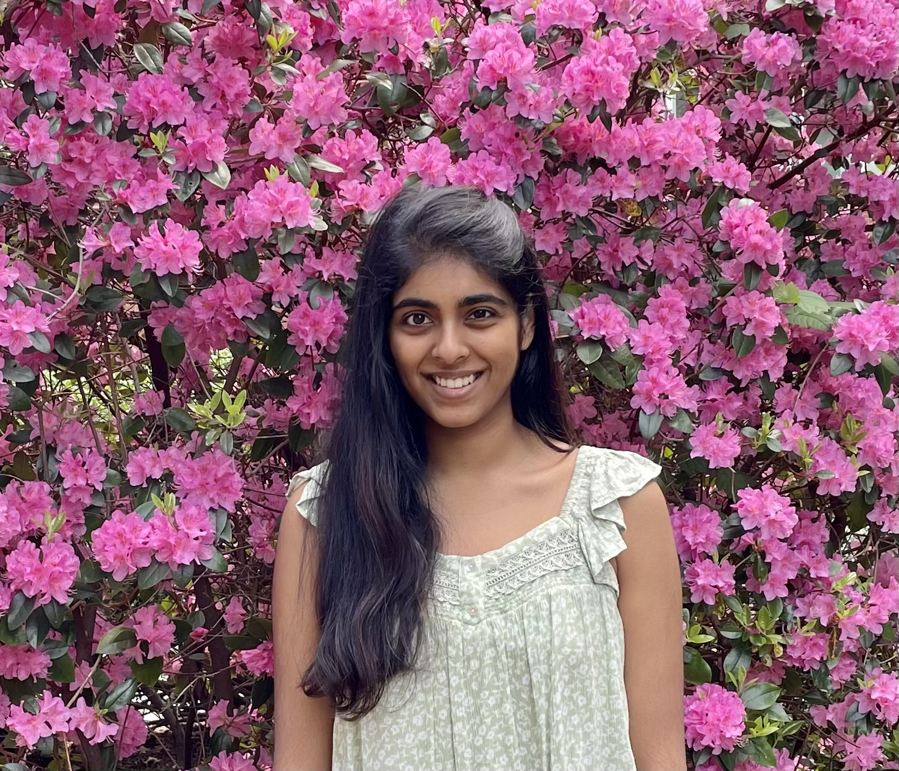

Smita Rajan
PhD Student in Mathematics · UC Berkeley
I am a second-year PhD student in mathematics at UC Berkeley, where I study algebraic geometry. More specifically, I am interested in intersection theory, moduli of curves, and tropical geometry. I am jointly advised by Bernd Sturmfels and Hannah Larson. I am grateful for the support of the NSF GRFP and the UC Berkeley Chancellor's Fellowship.
Email: smita_rajan@berkeley.edu
Publications
Activities
2026
- Spring 2026: Co-organizing Hodge theory seminar.
- January 2026: Algebraic Curves in January, Max Planck Institute for Mathematics in the Sciences, Leipzig, Germany.
2025
- December 2025: Passed qualifying exam.
- Spring 2025: Co-organized tropical geometry seminar.
- July 2025: SIAM Conference on Applied Algebraic Geometry, University of Wisconsin-Madison.
- July 2025: SLMath Summer School on New Perspectives on Discriminants and Applications, MPI Leipzig, Germany.
- June-July 2025: Visitor at the Max Planck Institute for Mathematics in the Sciences, Leipzig, Germany.
- June 2025: Summer School in Total Positivity and Quantum Field Theory, Harvard CMSA.
2024
- November 2024: Combinatorics of Fundamental Physics Workshop, Institute for Advanced Study, Princeton.
- June-July 2024: Visitor at the Max Planck Institute for Mathematics in the Sciences, Leipzig, Germany.
- May 2024: Amplituhedra, Cluster Algebras, and Positive Geometry, Harvard CMSA.